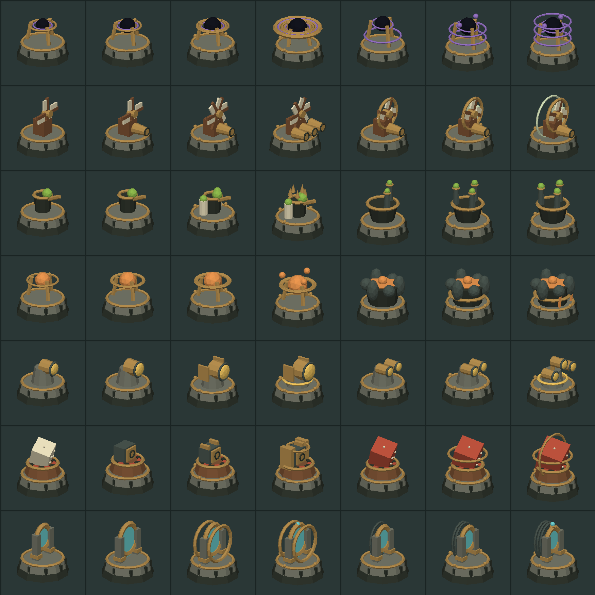

AutoHex TD · 18. November 2026
Sieben neue Türme.
Zwei Wege pro Turm.
Für Solo und Duo umgesetzt: Freischaltungen, Ausbau bis Stufe 4, eigene Modelle, Angriffe, Bonushexe und speicherbare Kampfzustände.
7 neue Waffen14 Ultimates49 Modellstufen je Edition
Die Ausbaupfade
Nach den Vergleichskämpfen angepasst
- Gravitation: 40 statt 55 Gold zum Bauen; vollständiger Ausbau 220 statt 300. Ereignishorizont verursacht 30 statt 20 Schaden pro Ziel.
- Portal: 75 statt 100 Gold zum Bauen; vollständiger Ausbau 280 statt 380. Öffnet erst, nachdem Gegner den Turm passiert haben, damit die erneute Wegstrecke mehr Schusszeit bringt.
- Gift: Grundgift 8 statt 6 Schaden/s. Königsvenom 30 statt 25 und Seuchenherd 27 statt 23. Die gemeinsame Grenze von drei Dosen bleibt bestehen.
- Wind: 14 statt 12 Grundschaden. Der Umleitungspfad bevorzugt einen anderen verbundenen Nachbarweg mit längerer Reststrecke.
Lang anhaltendes Feuer
Echter Kampfschaden in 20 Simulationssekunden gegen stationäre Ziele mit viel Leben. Angegeben ist der verlorene Lebenswert pro Sekunde, einschließlich Aufladung, Abklingzeit und gegnerischer Heilung. Alle Werte ohne Biom-, Gebäude- oder Augmentboni.
Die Sonnenlanze liegt bei dauerhaftem Bossfokus pro investiertem Gold nahe an der Balliste. Bei kurzer Schusszeit gewinnt die Balliste. Das Prismennetz verursacht zusammen weniger Schaden als die Sonnenlanze; gegen ein einzelnes Ziel bleiben seine übrigen Strahlen ungenutzt.
Gleiches Goldbudget, bewegte Gegner
Die Prüfstrecke ist 880 Einheiten lang. 24 Gegner beziehungsweise ein Boss laufen durch die echte Simulation. Stufe 1 nutzt 250 Gold und Gegnerstärke aus Welle 10; Stufe 4 nutzt 1000 Gold und Welle 18. Nicht ausgebbares Restgold bleibt sichtbar. Für Kontrolle werden bis zu 42 % in den untersuchten Turm investiert, der Rest in Bogenschützen. Andere Aufstellungen kaufen so viele Exemplare wie möglich und ergänzen Restgold mit Bogenschützen. Glücksspiel wurde mit acht festen Startwerten geprüft.
Die Tabellen zeigen besiegte Gegner. Grün hinterlegt: neue Türme. Die Rüstungs- und Magietests verwenden zusätzliche Schutzbalken von 75 % des Lebens. Der Testboss hat vierzehnfaches Leben, ohne Spezialfähigkeiten.
Alle Grundtürme und Ultimates vergleichen
Gemischte Aufstellungen vergleichen
Jeweils ein Ultimate des genannten Turms. Das restliche Budget von 1000 Gold wird mit Flammentürmen auf Stufe 3 und übrigen Bogenschützen gefüllt. So werden auch Türme mit gemeinsam begrenzten Effekten fairer beurteilt als beim Bau vieler gleicher Exemplare.
Grenzen gegen Endlosschleifen
- Gravitation und Frost teilen eine maximale Bindung von 2 Sekunden je 8 Sekunden; bei Bossen 0,5 Sekunden.
- Wind und Gravitation können einen Gegner insgesamt höchstens 240 Einheiten zurückwerfen. Verschiebungen teilen 8 Sekunden Schutzzeit.
- Jeder Gegner kann nur einmal per Portal zurückkehren. Geteilte Gegner erben diese Markierung. Bosse werden gebremst.
- Gift hat höchstens drei Dosen, davon eine Flächendosis. Übertragenes Gift verbreitet sich kein weiteres Mal.
- Höchstens zwei aktive Krater je Meteorturm; überlappendes Feuer stapelt nicht.
- Jackpot-Treffer haben einen Schadensdeckel. Heilung kann weder Gegner wiederbeleben noch zusätzliche Beute erzeugen.
Die umgesetzten Modelle
Zeilen: Gravitation, Wind, Gift, Meteor, Laser, Glücksspiel, Portal. Spalten: Grundturm, Pfad A Stufe 2–4, Pfad B Stufe 2–4. Die Vorschau wurde direkt aus den exportierten Spielmodellen erzeugt. Alle Modelle liegen auch für Sakura und Halloween vor.

Was der Vergleich abdeckt
Die Messungen prüfen Rollen, Goldkosten, Verteidigungen und begrenzte Effekte. Zusätzliche Tests prüfen beide Duo-Spieler, Spielstand-Wiederaufnahme, Accountauswahl, Zielwechsel und Effektübertragung. Eine gerade Prüfstrecke ersetzt keinen vollständigen Run: Kartenform, Turmpositionen, Augments, kombinierte Verlangsamungen und Bossfähigkeiten können das Ergebnis deutlich verschieben. Die Browser- und Spielgefühlprüfung bleibt offen.
Vollständige Messdaten